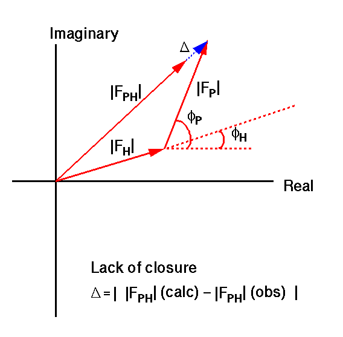

|
CCP4i: Graphical User Interface |
| MIR Tutorial Bath - Phase through MIR |
 |
BACK TO INDEX |  |
A simple statement of the problem is that given |FP|, |FPH| (measured experimentally), and |FH|, fH (calculated from the site coordinates), the unknown fP is to be determined. Consider first the hypothetical case where all quantities are error-free.
The structure will always appear centrosymmetric when projected down an evenfold axis. So for example P21 (unique b) has one centric zone: h0l; P21212 has three: hk0, h0l and 0kl; P1 and R3 have none. The centric zone reflections give a ready advantage in MIR studies, because fP can take only 1 of 2 possible values differing by 180° (e.g. 0/180° or 90/270°).
| When | fP = fH | |FPH|(calc) = |FP| + |FH| | |
| When | fP = fH + 180° | |FPH|(calc) = | -|FP| + |FH| | |
For each possibility of fP, |FPH|(calc) is compared with |FPH|(obs).
| For a non-centric zone reflection, fP can take any value. In general there are two solutions symmetric about fH, unless fP =fH or fH + 180°, in which case the acentric case is the same as the centric. This phase ambiguity is the reason that it takes at least two derivatives (or one with anomalous scattering) to solve the phase problem. |
Traditionally, the determination of the phase in the acentric case has been taught by "Harker construction" (phase circles). However this is not a practical method for a computer program, and in any case proper account has to be taken of the experimental and other errors. Consequently all software uses probability density functions (see section 5.2).
| So far it has been assumed that |FP|, |FPH|, |FH| and fH are known precisely; in practice all suffer from experimental error. |
|  |
By the cosine rule:
|FPH|(calc) = Ö(|FP|2 + |FH|2 + 2|FP||FH|cos(fH-fP))
Atoms show anomalous scattering when the incident x-rays have a wavelength near to the absorption edge of the atoms. Part of the radiation is absorbed by the atom and re-emitted with a change in phase. The scattering factor for the atom can be written in terms of real and imaginary parts:
f = f0 + Df' + i Df"
where Df' is the dispersion component of the anomalous scattering and Df" the absorption component. The imaginary component scatters out of phase with the primary wave, leading to absorption. Both Df' and Df" vary with the wavelength especially near the absorption edge. The absorption coefficients for C, H, O and N are small enough to be ignored. However, for the heavy metal atoms of a derivative, these coefficients cannot be ignored, especially as the absorption edge for these elements is close to the wavelength of X-rays commonly used. The anomalous differences are largest when |FP| and |FH| are approximately perpendicular.
| By reflecting the complex structure factors FP, FH and FPH for the reflection (-h-k-l) through the real axis so that they superimpose on those for the reflection (hkl), it will be seen that |FPH+| and |FPH-| are unequal, i.e. Friedel's relation |F(hkl)| = |F(-h-k-l)| no longer holds. The pair |FPH+| and |FPH-| are treated as two separate derivatives. |
The probability density function (PDF) is defined as:
Pj(fP) = Kj exp(-|Dj|2 / (2 s2(|FP|) + 2 s2(|FPH|) + s2(|Dj|)))
where Kj is a normalisation factor and s(|Dj|) is the r.m.s. lack of closure weighted by the phase probability. Note that this formulation ignores zone enhancement, centricity and non-isomorphism factors (see Read, R. in 1991 CCP4 Study Weekend Proceedings, pp 69-79).
The PDF is defined as
P(fP) = Pj Pj(fP)
Most programs use this, but the equation assumes independent information from each derivative, and therefore over-emphasises the contribution of FP (see R. Read, 1991 for rigorous derivation).
If the PDF's P(fP) and Pj(fP) are plotted as functions of fP, either in Cartesian coordinates or in polar coordinates, P will have maxima at the most probable phase(s). Also in the polar plots the centroid of the probability-weighted unit circle is shown. The phase of the centroid is the best phase (minimum r.m.s. error in electron density). The radius of the centroid is the figure of merit m » cos(phase error). For electron density maps the Fourier coefficient m|FP|exp(i fP) is used; for difference maps m|FPH-FP|exp(i fP) is used.
For better resolution, click on the pictures.
| Cartesian | polar |
|---|---|
The figures show the individual PDF's (P1, P2, P3) and product PDF's (P123, P12) for one reflection from 3 simulated derivatives, for |FP| = 10.0.
| # | |FPH| | |FH| | fH | s(|D|) | |FH|/s(|D|) |
| 1 | 8.5 | 3.0 | 80 | 2.0 | 1.5 |
| 2 | 10.5 | 2.0 | 110 | 1.0 | 2.0 |
| 3 | 11.0 | 1.0 | 230 | 1.0 | 1.0 |
Here, P1 and P2 are bimodal, whereas P3 is unimodal because |FPH3| = |FP| + |FH3|. The phasing power |FH|/s(|D|) determines the sharpness of the density function at the most probable phase, whereas the figure of merit determines the precision of the best phase. Multiplication of probabilities improves both the figure of merit and the phasing power. Addition of the low phasing power derivative 3 in this case makes little difference (compare P123 and P12).
For better resolution, click on the pictures.
| Cartesian | polar |
|---|---|
The figures show the effect of changing fH to 340° for derivative 3 (P3), while keeping all the other parameters the same. Even though derivative 3 has low phasing power, this considerably reduces the overall figure of merit, so even one poorly phased derivative can negate the accumulated effect of several good derivatives.
For better resolution, click on the pictures.
| Cartesian | polar |
|---|---|
The figures show the effect of varying the phasing power in the SIR case. fH has also been varied in order to separate the centroids in order to make the effect clear.
| # | 1 | 2 | 3 | 4 | 5 | 6 | 7 | 8 |
| fH | 45° | 75° | 105° | 135° | 165° | 195° | 225° | 255° |
| Phasing power | 0.25 | 0.50 | 0.75 | 1.00 | 1.25 | 1.50 | 2.00 | 2.50 |
From this it can be seen that a phasing power below 0.5 does not contribute significantly to the phasing; often a cutoff of 1.0 is used, but at this level the contribution to the phasing is clearly significant.
|
BACK TO INDEX | |
{kind=link}
{kind=link}
{kind=link}
{kind=link}
{kind=link}
{kind=link}
{kind=link}
{kind=link}
{kind=link}
{kind=link}